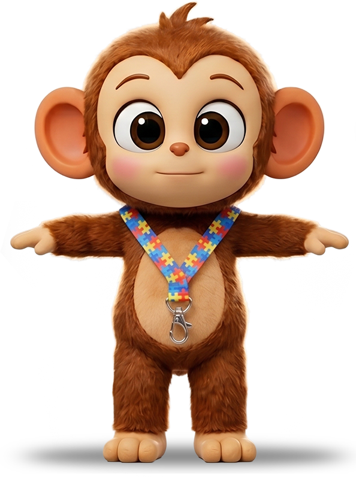

O Kaco nasceu pequeno e cheio de afeto. No começo era só um experimento de um pai pro próprio filho autista. Histórias curtas, ilustradas, no ritmo dele, com personagens que ele aprendeu a reconhecer e amar.
No meio do caminho a gente percebeu que o que funcionava pro nosso filho funcionava também pra muitas outras crianças. Então o projeto abriu a porta: hoje o Kaco é pra qualquer criança com alguma necessidade especial. TEA, TDAH, atraso de fala, ansiedade, deficiência visual, deficiência auditiva. E pras famílias e terapeutas que caminham junto.
A gente continua fazendo no ritmo da vida real: devagar, com carinho, escutando quem usa. Cada história, cada personagem, cada ferramenta nasce de uma conversa.
Aqui nada é apressado. Se uma criança se sentir mais segura, mais entendida ou só um pouquinho mais feliz por causa do Kaco, então já valeu a pena. E é por elas que a gente segue, um passinho de cada vez.
Flávio Passos